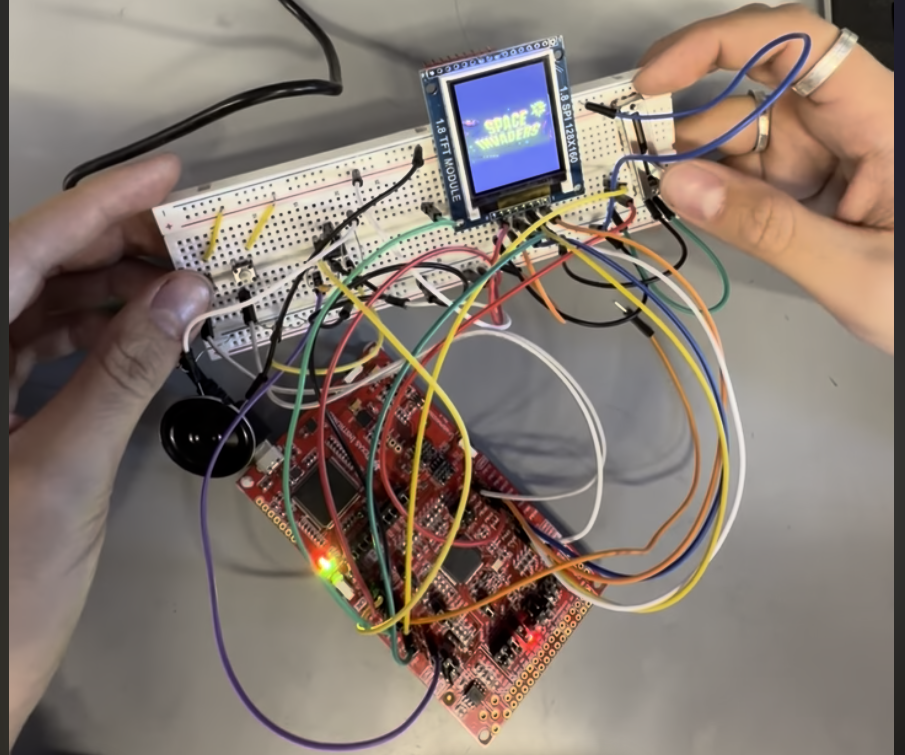

MSPM0 Handheld Console
Date: 2025 · Role: Firmware & Embedded C

Overview
This was my final project for EE 319K. I built a little handheld game console on a breadboard, programmed entirely in C, running on the MSPM0G3507 board from TI. It plays a simplified version of Space Invaders on a small color LCD. I really enjoyed this one because everything runs bare metal — there is no operating system, so I had to handle the screen, the sound, and the controls directly on the microcontroller.
Sound
One of my favorite parts was the audio. Instead of hard-coding beeps, I used Octave to generate an audio file — basically a list of voltage values — and ran those through a DAC to make the sound. It was really cool to see something I made in Octave actually come out of a speaker on my breadboard.
Controls
For movement I used a slider hooked up to the ADC. As you slide it, the analog voltage changes, the ADC reads that value, and it moves your ship across the screen. It ended up feeling really natural for a game like this, and a lot better than using buttons.